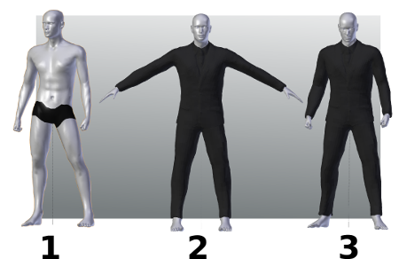

Add clothes (proxies)
A "proxy" is a mesh able to fit the character in order to be adapted to its transformations.
The classic case of proxies are the clothes and hair.
In ManuelbastioniLAB, the proxy usage is very simple. Practically it consists just in two steps:
- Prepare the proxy tailored for a base template and save it.
- Load the proxy and use it on any derived character.

A character derived from a base template is a character created modifying the lab parameters of a base model. For example if you create ten characters initiated with the caucasian female base, all them are derived from the caucasian female base.
Continuing with this example, a proxy designed for the caucasian female base will be fitted to the ten characters with one click.
A detailed explanation about how to create and use proxies, including a description of the lab tools, parameter and options, is available in a " detailed tutorial about clothes".
Also there is a short video that shows the usage of proxy system.
Another important feature is that the fitting algorithm used in the lab automatically takes account of rotations and of rigid pieces. This is fundamental in case of proxies that mix dynamic flexible and rigid fitting, for example boots with high heels.